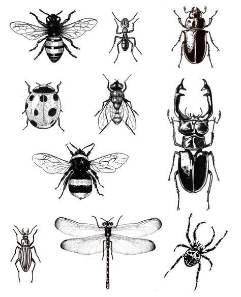
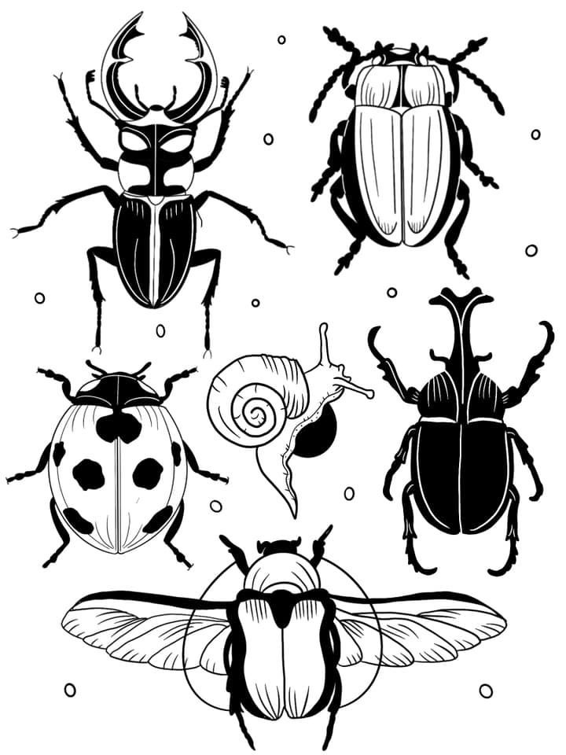

Throughout this presentation, we will explain some of these consequences and reflect on the importance of finding sustainable and balanced approaches to pest management.
Consequences

Ecological imbalance
Loss of pollinators
Impact on the food chain
Increase in pests
Impact on human health
Insects play a vital role in ecosystems, and their disappearance can create significant ecological imbalance. Their crucial function as pollinators is a clear example of this. If we eliminate pollinating insects, such as bees, the reproduction of many plants would be compromised. This would not only affect the diversity of plant species but also the availability of food for other insects and higher animals. As a result, biodiversity and ecosystem stability would be threatened.
The loss of pollinators would have serious consequences for the reproduction of plants that rely on insect pollination. We could face a decrease in the diversity of plant species and the loss of food crops, which would negatively impact our food and food security.
Insects are a crucial food source for numerous animals, including birds, amphibians, reptiles, and mammals. If we massively eliminate insects, the animals that depend on them for food could experience resource shortages and struggle to survive and reproduce. This disruption in the food chain would have a negative impact on the fauna of ecosystems and could lead to significant imbalances.
Many insects act as natural predators of agricultural and forestry pests. Indiscriminate elimination of predator insects allows these pests to multiply unchecked. This would result in greater damage to crops and forests, as well as an increased need for pesticide use. In addition to the environmental risks associated with excessive pesticide use, there could also be consequences for human health due to exposure to these chemicals.
While some insects, such as mosquitoes, are vectors for human diseases, mass insect elimination can also have indirect implications for human health. The loss of pollinators, for example, could lead to a decrease in the production of healthy and diverse foods, affecting the nutrition and food security of communities.